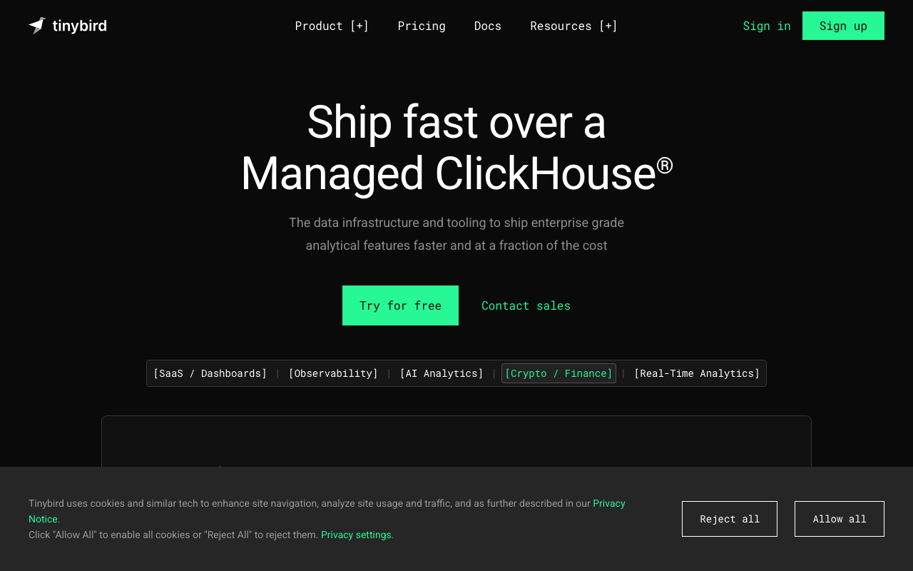

Neon green #27F795 + Roboto Mono everywhere
Tinybird · https://www.tinybird.co · Fetched 2026-04-20

Tinybird의 공식 사이트는 real-time analytics infra라는 포지셔닝을 극단적 Data-Native Terminal 비주얼로 풀어냈다. near-black #0A0A0A 바닥 위에 neon green #27F795 단 하나의 primary와 dark primary #008060 (semantic var --primary-dark)로 이원화.
가장 특이한 점은 sevenSegment 폰트 패밀리가 별도 로드되어 있어 Bloomberg-terminal 스타일의 시간 표시나 실시간 숫자를 실제로 그려준다는 것. 모든 marketing 텍스트는 Roboto Mono + Fira Mono로 렌더링되어 "우리는 code와 terminal이 native인 회사"라는 메시지를 준다.
데이터 상태 표시용 팔레트: #F5C451(amber/warning), #EC6D62(red/error), #00C1FF(cyan/info), #61C454(soft green/success). #303347은 blueprint-paper dark accent로 terminal panel 테두리에 쓰인다.
인터랙션은 매우 제한적 — hover는 border-color + green text glow 정도. scale/rotate 없음. "터미널 UI가 과한 애니메이션을 쓰지 않는다"는 일관성.
01. 한눈에 보기
:root {
--primary: #27F795;
--primary-dark: #008060;
--bg-base: #0A0A0A;
--bg-card: #202020;
--border: #3C3C3C;
--fg: #FFFFFF;
--blueprint: #303347;
}body {
font-family: "Roboto Mono",
"Fira Mono", monospace;
font-weight: 400;
font-size: 14px;
background: #0A0A0A;
color: #FFFFFF;
}
.lcd { font-family: "sevenSegment",monospace; }.btn-primary {
background: transparent;
border: 1px solid #27F795;
color: #27F795;
padding: 10px 20px;
border-radius: 4px;
font-family: "Roboto Mono",monospace;
transition: all .15s ease;
}
.btn-primary:hover {
background: rgba(39,247,149,.1);
box-shadow: 0 0 24px rgba(39,247,149,.2);
}02. 출처
| Source URL | https://www.tinybird.co |
|---|---|
| Fetched | 2026-04-20 |
| Framework | Next.js + Tailwind |
| Signature font | sevenSegment (LCD display) |
| Theme | dark only |
03. 테크 스택
- Framework: Next.js
- CSS: Tailwind + custom CSS vars
--primary,--primary-dark - Typography: Roboto Mono + Fira Mono + sevenSegment (numbers)
- Theme: dark only
- Signature: mono-everywhere + LCD digit display
04. 타이포그래피
Roboto Mono primary · Fira Mono secondary · sevenSegment LCD (숫자 전용).
- Primary Mono:
Roboto Mono(24회 사용,--font-roboto-mono) - Secondary Mono:
Fira Mono(21회 사용,--font-fira-mono) - LCD/Display:
sevenSegment— 숫자/시간/metric - Sans (rare):
Roboto(몇몇 UI) - Weights: 300 · 400 · 500 · 700 · bold
Type Scale
05. 컬러
Neon green primary 이원화 + dark 4단 + data state palette + blueprint accent.
Dominant Usage
06. 스페이싱
Tailwind 4px base.
07. 라디우스 — Sharp-first
Tinybird는 radius를 강하게 쓰지 않는다 — 4-8px 샤프 모서리가 terminal 느낌.
07S. 섀도우 — green aura
08. 모션
| Pattern | Value | Use |
|---|---|---|
| hover transition | .15s ease | border/color |
| data stream | smooth scroll | log-stream UI |
| LCD digit flip | instant | number change |
09. 레이아웃
Hero · code_first
- bg #0A0A0A
- headline mono 700
- live query + streaming dashboard
- green outline CTA
Terminal Panel
- bg #0A0A0A
- border 1px #303347
- radius 8
- font Roboto Mono #27F795
Card
- bg #202020
- border 1px #3C3C3C
- radius 8
- hover: green border + glow
Navigation
- height 56-64px compact
- bg #0A0A0A solid
- mono text
10. 컴포넌트
Green Outline CTA
.btn-primary {
background: transparent;
border: 1px solid #27F795;
color: #27F795;
padding: 10px 20px;
border-radius: 4px;
font-family: "Roboto Mono", monospace;
font-weight: 500;
letter-spacing: .02em;
}
.btn-primary:hover {
background: rgba(39,247,149,.1);
box-shadow: 0 0 24px rgba(39,247,149,.2);
}Filled Deep-Green CTA
.btn-deep {
background: #008060;
color: #FFFFFF;
padding: 10px 20px;
border-radius: 4px;
font-family: "Roboto Mono", monospace;
}
.btn-deep:hover { background: #27F795; color: #0A0A0A; }Terminal Panel
.terminal {
background: #0A0A0A;
border: 1px solid #303347;
border-radius: 8px;
font-family: "Roboto Mono", monospace;
font-size: 13px;
padding: 16px;
color: #27F795;
}LCD Number Display
.lcd {
font-family: "sevenSegment", "Roboto Mono", monospace;
font-size: 64px;
color: #27F795;
letter-spacing: .05em;
text-shadow: 0 0 12px rgba(39,247,149,.5);
}11. Agent Prompt Guide
| Role | Token | Hex |
|---|---|---|
| Primary | --primary | #27F795 |
| Primary dark | --primary-dark | #008060 |
| Bg | --bg-base | #0A0A0A |
| Card | --bg-card | #202020 |
| Blueprint | --blueprint | #303347 |
Example Prompts
🎯 Hero
Tinybird hero: bg #0A0A0A, headline 48px Roboto Mono 700 white. Below: terminal panel bg #0A0A0A, border 1px #303347, radius 8, showing SQL query with #27F795 green syntax. LCD number beside in sevenSegment 64px #27F795 with green glow.
🔘 CTA
Tinybird CTA: transparent bg, 1px solid #27F795, #27F795 text, padding 10px 20px, radius 4, Roboto Mono 500. Hover bg rgba(39,247,149,.1) + glow 0 0 24px.
📟 LCD Display
LCD digit display: sevenSegment 64px #27F795, text-shadow 0 0 12px rgba(39,247,149,.5), letter-spacing .05em. Use for real-time metrics.
🖥️ Terminal Panel
Terminal: bg #0A0A0A, border 1px #303347, radius 8, Roboto Mono 13px. Prompt prefix ">" in #27F795, output text white.
12. DO / DON'T
✓ DO
- ✅ 모든 marketing 텍스트를 Roboto Mono로
- ✅ primary
#27F795+ primary-dark#008060이원화 - ✅ 숫자 강조에 sevenSegment LCD 폰트
- ✅ bg
#0A0A0A고수 (true black 아님) - ✅ hover는 border+glow only (scale 없음)
✗ DON'T
- body에 sans-serif 쓰지 말 것 — mono 필수
- green을 bg fill로 쓰지 말 것 — outline/text only
- radius 16px+ 크게 쓰지 말 것 — 4-8 sharp 유지
- primary 외 색상 늘리지 말 것 — amber/red/cyan은 status만
- Motion scale(1.04) 쓰지 말 것 — Spotify 것